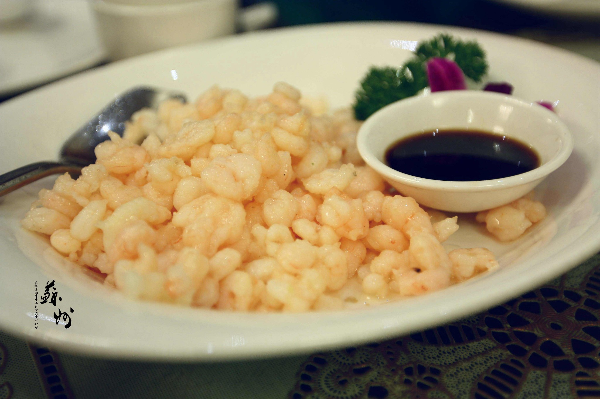
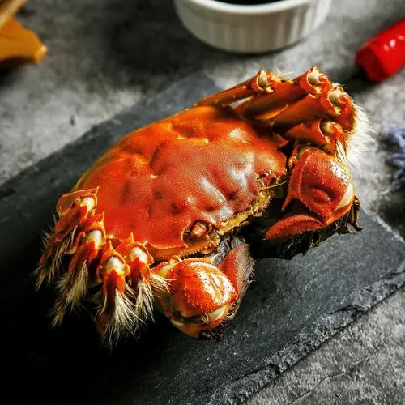
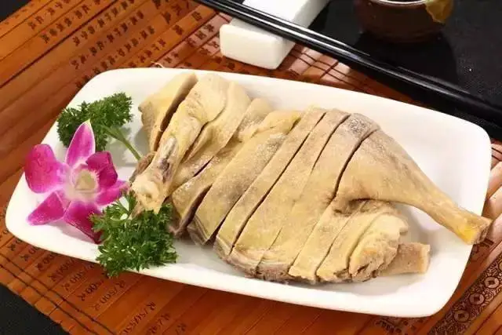
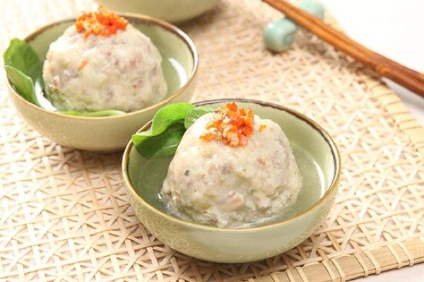
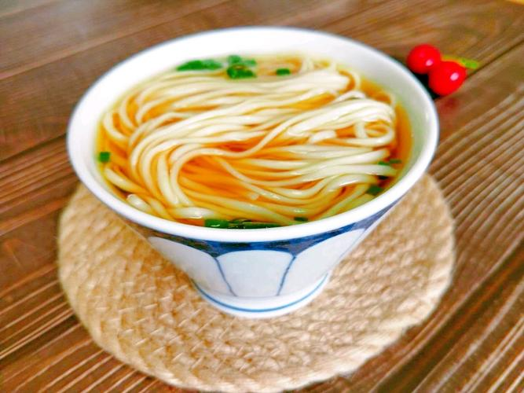

探索江南的独特口味

江南的美食文化源远流长，从传统的苏菜到创新的美食，每一道菜都蕴含着苏州人对食物的独特理解。在这个美食之都，小吃、大餐，总有一款能够满足你挑剔的味蕾。
美食不仅是一种味觉的享受，更是一种文化的传承。在苏州，美食是人们生活的一部分，是街头巷尾传承千年的风味，是每一个吃货的心头好。
阳澄湖大闸蟹 更多>>
【菜品介绍】阳澄湖大闸蟹是江南的一道传统美食，产自阳澄湖的淡水蟹类。肉质鲜美，是秋冬季节不可错过的美味。在阳澄湖，每年都有盛大的大闸蟹节，吸引着无数美食爱好者前来品味。
苏式桂花鸭 更多>>
 【菜品介绍】
桂花鸭是苏州传统名菜，选用当地鸭只，经过独特的腌制和烹饪工艺制作而成。外皮金黄酥脆，肉质鲜嫩，香味扑鼻，是一道具有独特风味的美食。
蟹粉狮子头 更多>>
 【菜品介绍】
蟹粉狮子头是苏州地方传统名菜之一，以选用优质猪肉，搭配鲜美的蟹黄和精心调制的调料而成。
阳春面 更多>>
 【菜品介绍】
阳春面是苏州地方的特色面食，以面条爽滑，汤汁鲜美而著称。